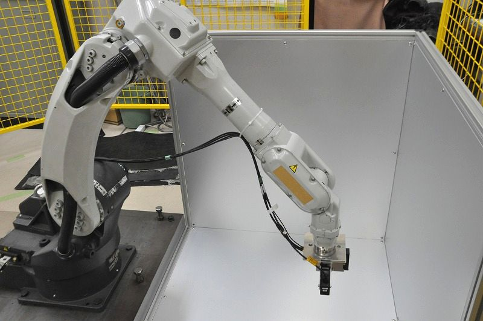

産業用ロボット（位置制御・軌跡追従制御）
|  |  |
| ロボットアーム先端における振動抑制制御 | ロボット先端負荷のパラメータ同定 |
ロボットアーム先端における振動抑制制御
近年では，産業用ロボットは多くの工場で導入され，溶接・塗装・搬送など，様々な用途で使われています。
製品の生産性の向上を図るために，産業用ロボットにはさらなる高速化が日々求められています。
しかしながら，高速動作ではロボット先端の振動が顕著に現れる問題があります。
そこで，本研究室では，高速動作時に生じるロボット先端の振動抑制に力を入れています。 具体的には，動力学トルク補償を用いた関節軸の各軸独立化，および各軸ごとのフィードバック制御系設計を行った上で，各軸の共振周波数を考慮した関節軸指令の設計法を提案しています。 他には，関節軸間の干渉を考慮してロボットアームのモデル化を行った上で，関節軸間の干渉を抑制するための制御系設計についても検討を行っています。
ロボット先端負荷のパラメータ同定
産業用ロボットには，その用途に応じて様々な種類のツールが取り付けられることになります。 このとき，ツールの質量や重心位置によってはロボットアーム先端の制御性能が劣化することが考えられます。 そこで，本研究室では，逐次最小二乗法と呼ばれる手法に基づいてツールの質量や重心位置を実時間で同定しフィードバック制御系に反映させることで，ツールの種類によらない高性能なモーション制御を目指しています。